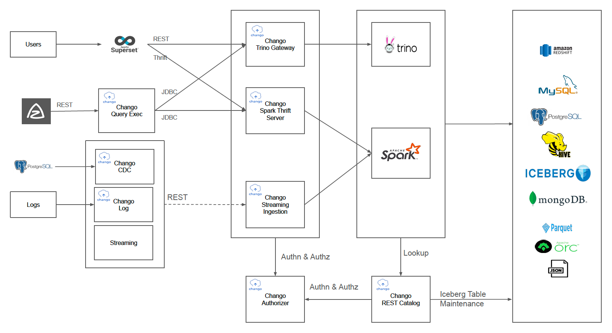

What is Chango?

Chango is unified data lakehouse platform to solve the problems which occur in your data area, which can be installed either in online/public or in offline/disconnected environment.
Chango provides popular open source engines like spark, trino, kafka and iceberg as lakehouse table format and several chango specific components.
Chango Data Lakehouse Platform

In Ingestion layer:
SparkandTrinowithChango Query Execwill be used as data integration tool.Kafkais used as event streaming platform to handle streaming events.Chango Ingestionwill be used to insert incoming streaming events to Chango directly.
In Storage layer:
- Chango supports Apache Ozone as object storage by default and external S3 compatible object storage like AWS S3, MinIO, OCI Object Storage.
- Data lakehouse format is
Icebergtable format in Chango.
In Transformation layer:
SparkandTrinowithChango Query Execwill be used to run ETL jobs.
In Analytics layer:
Trinois used as query engine to explore all the data in Chango.BItools likeApache Supersetwill connect toTrinoto run queries throughChango Trino Gateway.
In Management layer:
Azkabanis used as workflow. All the batch jobs like ETL can be integrated withAzkaban.Chango REST Catalogis Iceberg REST Catalog and used as data catalog in Chango.- Chango supports storage security to control data access based on RBAC in Chango.
Chango Authorizerwill be used for it. Chango Trino Gatewayis an implementation of Trino Gateway concept.Chango Trino Gatewayprovides several features like authentication, authorization, smart query routing(routing to less exhausted trino clusters), trino cluster activation/deactivation. For more details, see Chango Trino Gateway.Chango Spark SQL Runnerexposes REST API to which clients send spark sql queries using REST to execute spark queries.Chango Spark Thrift Serverexposes JDBC/Thrift to which clients send spark sql queries using JDBC/Thrift to execute spark queries.
Chango Architecture From the Point of Use Cases

This picture above shows Chango architecture from the point of use cases in data lakehouses.
Data Exploration
Users can run trino and spark sql queries like ETL queries and interactive queries through Superset which connects to Chango Trino Gateway and Chango Spark Thrift Server.
ETL Query Jobs with Workflow Engine
All the ETL query jobs will be integrated and scheduled with Azkaban. Trino ETL queries and spark SQL ETL query jobs will be processed periodically by Azkaban. ETL queries will be sent to Chango Query Exec through REST, and ETL queries will be executed through Chango Trino Gateway by Trino and Chango Spark Thrift Server by Spark.
Realtime Analytics
- CDC data, for example, PostgreSQL CDC data will be captured by
Chango CDCwhich will send it toChango Streaming Ingestion(Chango Data API+ Kafka +Chango Spark Streaming) through REST. Incoming streaming events will be inserted into iceberg table. - Log files will be read by
Chango Logwhich will send it toChango Streaming Ingestionthrough REST. - Streaming events generated by Applications will be sent to
Chango Streaming Ingestionthrough REST.